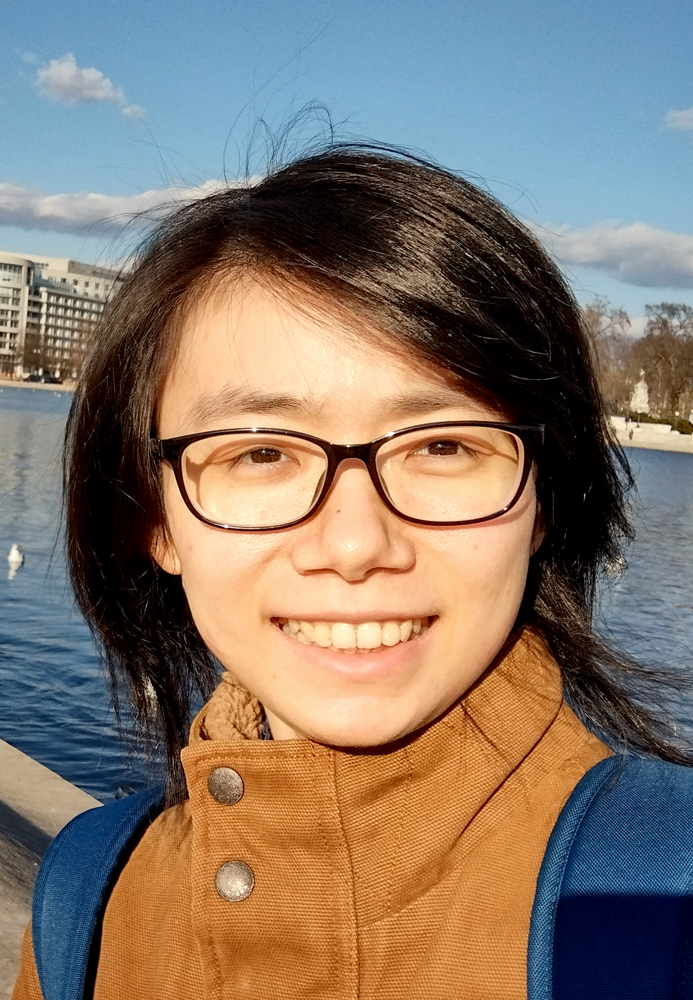

Lishan Yang (杨丽杉)
Assistant Professor
George Mason University
Department of Computer Science
Email: lyang28 AT gmu.edu
Office: ENGR 4610
My research interest mainly falls in system reliability and GPU architecture. I received a Ph.D. degree in the Department of Computer Science at William & Mary in 2022, under the supervision of Prof. Evgenia Smirni. Before coming to W&M, I got my bachelor's degree in computer science from University of Science and Technology of China (USTC) in 2016. Check my CV here
• I am looking for several highly-motivated students who are interested in system research to join my group. In particular, I am looking for a student interested in Reliability of Autonomous Driving Systems. Ph.D. students will be fully funded. If you are interested: Click here for more details or send your CV and transcript to my email (lyang28 AT gmu.edu).• I am honoured to receive the Best Reviewer Award from ICPE 2024.
Publications
GPU Reliability Assessment: Insights Across the Abstraction LayersCLUSTER 2024 (Acceptance rate: 28.2%, Best Paper Finalist) [PDF]
Lishan Yang, George Papadimitriou, Dimitrios Sartzetakis, Adwait Jog, Evgenia Smirni, Dimitris Gizopoulos
Aspis: Lightweight Neural Network Protection Against Soft Errors
ISSRE 2024 [PDF]
Anna Schmedding, Lishan Yang, Adwait Jog, Evgenia Smirni
Strategic Resilience Evaluation of Neural Networks within Autonomous Vehicle Software
SafeComp 2024 (Acceptance rate: 23.5%)
Anna Schmedding, Philip Schowitz, Xugui Zhou, Yiyang Lu, Lishan Yang, Homa Alemzadeh, Evgenia Smirni
Investigating the Impact of High-Level Software Design on Low-Level Hardware Fault Resilience
DSN 2023, Disrupt23 track
Bohan Zhang, Lishan Yang, Hui Xu, Guanpeng Li
Epidemic Spread Modeling for COVID-19 Using Cross-fertilization of Mobility Data
IEEE Transactions on Big Data (TBD), 2023
Anna Schmedding, Riccardo Pinciroli, Lishan Yang, Evgenia Smirni
GeoSpread: an Epidemic Spread Modeling Tool for COVID-19 Using Mobility Data
GoodIT 2022
Anna Schmedding, Lishan Yang, Riccardo Pinciroli, Evgenia Smirni
Strategic Safety-Critical Attacks Against an Advanced Driver Assistance System
DSN 2022, Practice Experience Report
Xugui Zhou, Anna Schmedding, Haotian Ren, Lishan Yang, Philip Schowitz, Evgenia Smirni, Homa Alemzadeh
Lifespan and Failures of SSDs and HDDs: Similarities, Differences, and Prediction Models
IEEE Transactions on Dependable and Secure Computing (TDSC), 2022
Riccardo Pinciroli, Lishan Yang, Jacob Alter, Evgenia Smirni
SUGAR: Speeding Up GPGPU Application Resilience Estimation with Input Sizing
Sigmetrics 2021 (Fall Deadline, Acceptance Rate: 12%) [PDF] [video] [Slides]
Lishan Yang, Bin Nie, Adwait Jog, Evgenia Smirni
Enabling Software Resilience in GPGPU Applications via Partial Thread Protection
ICSE 2021 (Acceptance Rate: 22%) [PDF] [Video] [Slides]
Lishan Yang, Bin Nie, Adwait Jog, Evgenia Smirni
Practical Resilience Analysis of GPGPU Applications in the Presence of Single- and Multi-bit Faults
IEEE Transactions on Computers, vol. 70, no. 1, pp. 30-44, 1 Jan. 2021 [PDF]
Lishan Yang, Bin Nie, Adwait Jog, Evgenia Smirni
Fault Site Pruning for Practical Reliability Analysis of GPGPU Applications
MICRO 2018: 749-761 (Acceptance Rate: 21%) [PDF] [Lightening Video] [Slides] [Poster]
Bin Nie, Lishan Yang, Adwait Jog, Evgenia Smirni
Evaluating Scalability and Performance of a Security Management Solution in Large Virtualized Environments
ICPE 2018: 168-175 [PDF] [Slides]
Lishan Yang, Ludmila Cherkasova, Rajeev Badgujar, Jack Blancaflor, Rahul Konde, Jason Mills, Evgenia Smirni
G-NET: Effective GPU Sharing in NFV Systems
NSDI 2018: 187-200 (Acceptance Rate: 16%) [PDF]
Kai Zhang, Bingsheng He, Jiayu Hu, Zeke Wang, Bei Hua, Jiayi Meng, Lishan Yang
Refereed Posters
Probing Weaknesses in GPU Reliability Assessment: A Cross-Layer ApproachISPASS 2021, Poster [PDF]
Lishan Yang, George Papadimitriou, Dimitrios Sartzetakis, Adwait Jog, Evgenia Smirni, Dimitris Gizopoulos
Typhoon: Enabling GPGPU Application Resilience Estimation with Different Input Types
ACM Sigmetrics Student Research Competition (SRC) 2021 [PDF]
Lishan Yang
Simulating COVID-19 Containment Measures Using the South Korean Patient Data
Sensys 2020, COVID-19 Pandemic Research Poster Session [PDF] [Slides] [Demo]
Lishan Yang, Anna Schmedding, Riccardo Pinciroli, Evgenia Smirni
 Our group at SC 2023. From left to right: Zhu, Lishan, Yu.
Our group at SC 2023. From left to right: Zhu, Lishan, Yu.
Students
I am fortunated to work with the following students:
• Yu Sun (PhD student, since 2023 Fall)
• Zhu Zhu (PhD student, since 2023 Fall)
• Giuseppe De Rosa (Visiting PhD student from Scuola IMT Alti Studi Lucca, since 2025 Spring)
• Daehyun Lee (MS student, since 2024 Fall)
• Dhatri Parakal (Undergrad from UIUC, since 2024 Spring, recruited from ASSIP)
• Cherish Mulpuru, George Mason University, since 2024 Fall (Undergrad, supported by CCI NoVA-node URA program)
• Sofia Francisco Skamnelos (High school student from Holton-Arms School, since Nov 2024, through an initiative of "Directed Reading" program with Holton-Arms School)
• Grace Xiao (High school student from Holton-Arms School, since Nov 2024, through an initiative of "Directed Reading" program with Holton-Arms School)
• Lucia M. Noto (High school student from Holton-Arms School, 2024 May-Sep, through an initiative of "Directed Reading" program with Holton-Arms School)
• Weilon Price, George Mason University, 2022-2023 (Undergrad)
Research Funding
My research group is supported by the following research grants:
• NSF, #CCF-2402940, 2024-2027
Collaborative Research: SHF: Medium: End-to-End Resilience in Autonomous Driving Systems: Strategic Vulnerability Assessment and Mitigation
Role: lead-PI
With Dr. Homa Alemzadeh (University of Virginia) and Dr. Evgenia Smirni (William & Mary)
• NSF, #OAC-2410856, 2024-2027
Collaborative Research: Elements: MELIOREM: An Integrated Evaluation Cyberinfrastructure towards Safe and Dependable Autonomous Driving Systems
Role: co-PI
With Dr. Guanpeng Li (lead-PI, University of Iowa)
• NSF, #OAC-2417718, 2024-2028
Collaborative Research: CyberTraining: Implementation: Medium: AI4EDU: Cloud Infrastructure-Enabled Training for AI in Educational Research and Assessment
Role: co-PI
With Dr. Ningfang Mi (lead-PI, Northeastern University), Yu Wang (Temple University), Chiu C. Tan (Temple University), Chuang Wang (University of North Carolina at Charlotte)
• Commonwealth Cyber Initiative (CCI), #HC‐3Q24‐047, Research in Supply Chain Cybersecurity, 2024.
Securing the Machine Learning Components of Autonomous Systems: Risk Assessment and Mitigation
Role: co-PI
With Dr. Evgenia Smirni (lead-PI, William & Mary)
• George Mason University startup fund.
Teaching
CS692 Special Topics: Reliability in Computer Systems, 2024 Fall
CS692 Special Topics: Advanced Computer Architecture, 2024 Spring
CS475 Concurrent & Distributed Systems, 2023 Fall
CS695 Special Topics: Advanced Computer Architecture, 2023 Spring
CS475 Concurrent & Distributed Systems, 2022 Fall
Services
Program Committees
PPoPP 2025, DSN 2025, Sigmetrics 2025, ICPE 2025, ICDCS 2025, SRDS 2025, EDCC 2025, U-SPACE 2025, Sigmetrics 2024, DSN 2024, ICPE 2024, CLUSTER 2024, SAC 2024, HiPC 2024, Cluster 2024 Poster Track, CCGrid 2024 Doctoral Symposium and Early Career Track, DSN 2023, SC 2023, IPDPS 2023, HPDC 2023, SRDS 2023, AIPerf 2023, LADC 2023 Student Forum, ESANN 2023 special session
Organizing Committees
Sigmetrics 2025 (SRC Chair), ICPE 2025 (Industry Chair), DSN 2025 (Artifact Chair), SRDS 2025 (Publicity Chair), Sigmetrics 2024 (SRC Chair), DSN 2024 (Posters Track Chair), HPDC 2024 (Social Media Chair), ICPE 2024 (Vision and WiP Track Chair), DSML 2023 (General and PC Chair), Sigmetrics 2023 (Publicity Chair), HPDC 2023 (Social Media Chair), HotStorage 2023 (Virtual Conference Chair)
Steering Committee
DSML (Workshop of Dependable and Secure Machine Learning)
Panelist
ISSRE 2024 Doctoral Symposium Discussion Panel
W&M Symposium for Graduate Studies 2022
Journal Reviewing
IEEE TC (Transactions On Computers)
ACM TACO (Transactions on Architecture and Code Optimization)
ACM TOMPECS (Transactions on Modeling and Performance Evaluation of Computing Systems)
IEEE TDSC (Transactions on Dependable and Secure Computing)
Computers and Electrical Engineering (ScienceDirect)
Faculty Advisor of GMU CS-GSA (Graduate Student Association)
Session Chair & Poster Judge
ACM Capital Region Celebration of Women in Computing (CAPWIC) 2021 and 2022
Sub-reviewer
Sigmetrics 2022, DSN 2022, DSN 2021, Sigmetrics 2021, Sigmetrics 2020, Performance 2020, ICPE 2020, Sigmetrics 2019, DSN 2019
Member
WHPC-Virginia (Women in High Performance Computing in Virginia)
SWC-WM (Society of Women in Computing in William & Mary)
Volunteer
HPDC 2019 Program Committee Meeting
Mentor
HackViolet 2022
Professional Experience
2022/08 - Present Assistant Professor, George Mason University
2017/08 - 2022/06 Research Assistant, William & Mary
2021/05 - 2021/08 Software Engineering Intern, Facebook Inc
2019/06 - 2019/10 Reliability Intern, IBM Corporation
2018/07 - 2018/07 Student, ACACES Summer School
2017/05 - 2017/08 Software Engineering Intern, Hytrust Inc
2016/08 - 2018/05 Teaching Assistant, William & Mary
Awards
2023 Best Reviewer Award, ICPE 2024
2022 SPEC Kaivalya Dixit Distinguished Dissertation Award
2022 Student Travel Grant for DSN
2022 Graduate Park Award, William & Mary
2021 vGHC Students and Faculty Scholarship
2021 International Student Opportunity Scholarship, William & Mary
2018 Student Travel Grant for MICRO, ICPE, and NSDI
2018 OGSR Research Grant, William & Mary
2018 Student Leadership Grant, William & Mary
2018 CS Student Travel Grant, William & Mary
2013 Tenth Yang Ya Scholarship, USTC
Other Interests & Life & Thoughts
• My lab has an unofficial name: randGood. Research is kind of random (because our performance and ideas are not static; we have high-performance days and low-performance days), but we always work towards good ideas, papers, and contributions. Don't panic on low-performance days and enjoy research!
• Check our group photos
• I won the first place in the scavenger hunt at ICPE 2024, together with Anna Beatriz Lucena Lira from UFCG
• I am a big fan of Bach ♫ (and bash)
• My recent favorite joke: Because of the bit flips, finally I become an assistant processor :P
• Check my roommate's photo =w=
• I took a group of GMU students to CAPWIC 23. CAPWIC is one of my favorite conferences - not very big, but a warm event to welcome, embrace, and encourage students to the world of computer science :) Check our photos and join us in the future!